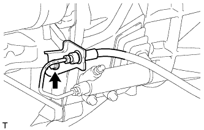
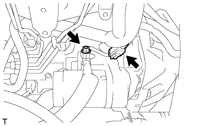
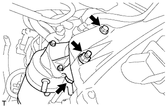

СТАРТЕР > СНЯТИЕ |
| 1. DISCONNECT CABLE FROM NEGATIVE BATTERY TERMINAL |
| 2. REMOVE REAR ENGINE UNDER COVER ASSEMBLY |
Remove the 4 bolts and rear engine under cover.
| 3. DISCONNECT CLUTCH RELEASE CYLINDER ASSEMBLY |
 |
Remove the 2 bolts and disconnect the release cylinder.
| 4. DISCONNECT CLUTCH FLEXIBLE HOSE BRACKET |
|  |
Remove the bolt and disconnect the clutch flexible hose bracket.
| 5. REMOVE STARTER ASSEMBLY |
|  |
Disconnect the starter connector.
Remove the terminal cap.
Remove the nut and disconnect the starter wire.
|  |
Remove the nut, 2 bolts and starter.